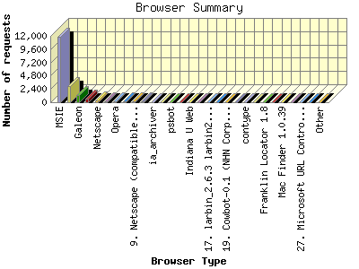
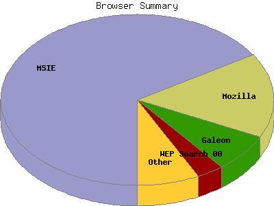

Report generated by Analog 5.91beta1 and Report Magic 2.21
|
Web Server Statistics for "Harish Narayanan (hnarayan) - October 2003" Report generated by Analog 5.91beta1 and Report Magic 2.21 |
The Browser Summary identifies the most popular web browsers used to visit
this site.
Browsers are broken down by recognized categories such as
Netscape Navigator/Communicator, Microsoft Internet Explorer, WebTV, Opera
and the like. Within each category is also a subgroup by version number
such as 'MSIE 5.0' or 'Netscape 4.5'.
This report shows all results. This report is sorted by number of requests.


| Browser Type | Number of requests | Number of bytes transferred | Percentage of the bytes | Percentage of the requests | |
|---|---|---|---|---|---|
| 1. | MSIE | 11,909 | 153.680 MB | 57.38% | 66.19% |
| MSIE/6 | 10,103 | 130.226 MB | 48.62% | 56.15% | |
| MSIE/5 | 1,766 | 23.280 MB | 8.69% | 9.81% | |
| MSIE/4 | 40 | 177.385 KB | 0.07% | 0.22% | |
| 2. | Mozilla | 2,887 | 39.530 MB | 14.76% | 16.05% |
| Mozilla/1 | 2,860 | 38.784 MB | 14.48% | 15.90% | |
| 3. | Galeon | 1,282 | 13.976 MB | 5.22% | 7.12% |
| Galeon/1 | 1,282 | 13.976 MB | 5.22% | 7.12% | |
| 4. | WEP Search 00 | 585 | 12.511 MB | 4.67% | 3.25% |
| 5. | Netscape | 320 | 2.494 MB | 0.93% | 1.78% |
| Netscape/7 | 254 | 2.095 MB | 0.78% | 1.41% | |
| Netscape/4 | 66 | 408.762 KB | 0.15% | 0.37% | |
| 6. | Scooter | 176 | 17.588 MB | 6.57% | 0.98% |
| Scooter/3 | 176 | 17.588 MB | 6.57% | 0.98% | |
| 7. | Opera | 166 | 2.621 MB | 0.98% | 0.92% |
| Opera/7 | 166 | 2.621 MB | 0.98% | 0.92% | |
| 8. | Safari | 153 | 761.634 KB | 0.28% | 0.85% |
| Safari/85 | 149 | 753.880 KB | 0.28% | 0.83% | |
| 9. | Netscape (compatible) | 112 | 1.315 MB | 0.49% | 0.62% |
| 10. | Googlebot | 106 | 1.915 MB | 0.71% | 0.59% |
| Googlebot/2 | 106 | 1.915 MB | 0.71% | 0.59% | |
| 11. | ia_archiver | 72 | 2.708 MB | 1.01% | 0.40% |
| 12. | Googlebot-Image | 68 | 11.392 MB | 4.25% | 0.38% |
| 13. | psbot | 38 | 3.074 MB | 1.15% | 0.21% |
| psbot/0 | 38 | 3.074 MB | 1.15% | 0.21% | |
| 14. | W3C_Validator | 18 | 456.726 KB | 0.17% | 0.10% |
| W3C_Validator/1 | 18 | 456.726 KB | 0.17% | 0.10% | |
| 15. | Indiana U Web | 16 | 403.458 KB | 0.15% | 0.09% |
| 16. | River Valley Inc | 16 | 403.458 KB | 0.15% | 0.09% |
| 17. | larbin_2.6.3 larbin2.6.3@unspecified.mail | 14 | 311.238 KB | 0.11% | 0.08% |
| 18. | Zao | 13 | 543.118 KB | 0.20% | 0.07% |
| Zao/0 | 13 | 543.118 KB | 0.20% | 0.07% | |
| 19. | Cowbot-0.1 (NHN Corp. | 9 | 229.908 KB | 0.08% | 0.05% |
| Cowbot-0.1 (NHN Corp. / | 9 | 229.908 KB | 0.08% | 0.05% | |
| 20. | Camino | 8 | 53.764 KB | 0.02% | 0.04% |
| Camino/0 | 8 | 53.764 KB | 0.02% | 0.04% | |
| 21. | contype | 4 | 37.614 KB | 0.01% | 0.02% |
| 22. | Jigsaw | 4 | 8.168 KB | 0.00% | 0.02% |
| 23. | Franklin Locator 1.8 | 3 | 57.016 KB | 0.02% | 0.02% |
| 24. | NPBot (http: | 2 | 204.000 B | 0.00% | 0.01% |
| NPBot (http://www | 2 | 204.000 B | 0.00% | 0.01% | |
| 25. | Mac Finder 1.0.39 | 2 | 41.123 KB | 0.01% | 0.01% |
| 26. | iSiloX | 2 | 21.984 KB | 0.01% | 0.01% |
| iSiloX/4 | 2 | 21.984 KB | 0.01% | 0.01% | |
| 27. | Microsoft URL Control - 6.00.8862 | 1 | 19.942 KB | 0.01% | 0.01% |
| 28. | Openfind data gatherer, Openbot | 1 | 19.882 KB | 0.01% | 0.01% |
| Openfind data gatherer, Openbot/3 | 1 | 19.882 KB | 0.01% | 0.01% | |
| 29. | Konqueror | 1 | 1.505 MB | 0.56% | 0.01% |
| 30. | FAST-WebCrawler | 1 | 62.092 KB | 0.02% | 0.01% |
| 31. | ASPseek | 1 | 19.882 KB | 0.01% | 0.01% |
| ASPseek/1 | 1 | 19.882 KB | 0.01% | 0.01% | |
| 32. | IRIX | 1 | 160.000 KB | 0.06% | 0.01% |
| 33. | Mail Sweeper | 1 | 15.022 KB | 0.01% | 0.01% |
This report was generated on January 18, 2004 18:27.
Report time frame October 1, 2003 00:41 to October 31, 2003 23:51.
| Web statistics report produced by: | |
 Analog 5.91beta1 Analog 5.91beta1 |  Report Magic 2.21 Report Magic 2.21 |